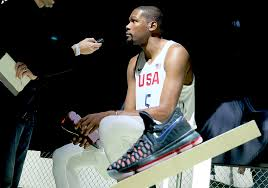
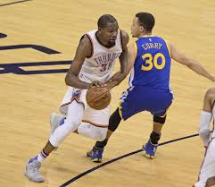
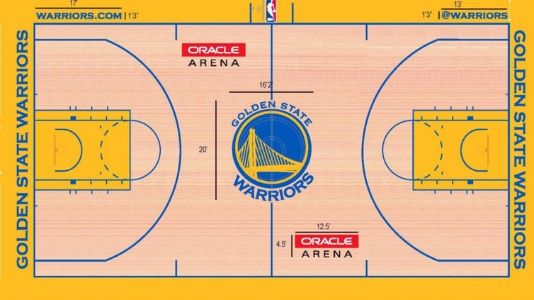

Kevin Durant Goes Warriors!!!
The most sought-after free agent of the summer spent the weekend mulling a variety of offers.


Although Kevin Durant (and every other free agent on the market) cannot sign until the free agency moratorium is lifted on July 7, he penned a column on The Players’ Tribune in which he revealed he is joining the Golden State Warriors:
This has been by far the most challenging few weeks in my professional life. I understood cognitively that I was facing a crossroads in my evolution as a player and as a man, and that it came with exceptionally difficult choices. What I didn’t truly understand, however, was the range of emotions I would feel during this process.
The primary mandate I had for myself in making this decision was to have it based on the potential for my growth as a player — as that has always steered me in the right direction. But I am also at a point in my life where it is of equal importance to find an opportunity that encourages my evolution as a man: moving out of my comfort zone to a new city and community which offers the greatest potential for my contribution and personal growth. With this in mind, I have decided that I am going to join the Golden State Warriors.
